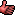

ShootSpot
A ShootSpot is the abstract parent of actors placed in a map to tell bots a good location to shoot the ball into the enemy xBombDelivery in an xBombingRun game. What you'll actually be placing are:
- BlueShootSpot (for red bots to shoot into the blue xBombDelivery)
- RedShootSpot (for blue bots to shoot into the red xBombDelivery)
They are identical apart from the team requirement, so both are discussed on this page.
Tips
- At least one ShootSpot per xBombDelivery is required for bots to run properly in the map. (i.e., without them, the bots will not attempt shoot the ball to the goal.)
- Make sure you can actually shoot the ball through the goal from your spots without resorting to tricky bank shots or shooting in mid-air.
- Bots will seek out these ShootSpots when they're low on health or are outnumbered or otherwise stressed out. So, make sure you have at least one ShootSpot close to the goal. Otherwise you'll see bots retreating from the BombDelivery to shoot at it.
- These can be used at {should that be 'as'?} "PuntSpots" too. Note that the bots will try and shoot the ball straight to the goal in an arc, regardless of any obstacles along that arc.
- Bots from either team will use the ShootSpot in a pinch. While the Red Team's bots shoot at the blue BombDelivery the Blue Team will be punting the ball the other direction from the same spot.
Discussion
SuperApe: I would really love a suggestion on how to get bots to shoot from a spot in mid-air. 
GRAF1K: Wouldn't you just place a ShootSpot in the air? Or will that not work? (SuperApe: unfortunately, no. I've tried.)
Foxpaw: I think that Shootspots are basically a special type of pathnode, and can't be placed in mid-air if they're going to work. Which is not to say you couldn't make the following hack:
Have a special actor, JumpShootSpot or whatever. When touched by a pawn, it checks to see if A) that pawn is bot controlled, and B) that pawn has the ball. If those checks pass, it forces the bot to face the direction it's going to shoot the ball in, and when the bot reaches a certain radius, (smaller than it's collision radius, to give some time for the mid-air aiming) the JumpShootSpot calls the pawns weapons firecontrollers fire function and discharges the ball, all with no actual input from the bot AI!
As an added advantage, this would also allow you to implement bank-shots for bots.
Off-Kilter: BTW, near as I can tell from the code, the shoot spots are actually coded wrong (blue is team 0, red is team 1), but it doesn't seem to matter because the code doesn't care about the team at all for the most part. Only thing I saw is when xBombDelivery comes into being... it checks to see whether any shoot spots exist with the team == the team of the gate. It doesn't matter at all where they are on the map either  So I think people end up putting the blue shoot spot in front of blue gate and vice versa (which is 'right'), and the code still all works because both gates have shoot spots on the map with the right team (though at the wrong gate if you consider team number). I hope what I just said makes sense, and if I'm wrong, please correct me. I am working on a multi-team BR mod so that's why I discovered this oddity. Oh, and to answer SuperApe's message above... shoot spots aren't manditory. It'll work fine without them, though they'll never try to shoot the ball.
So I think people end up putting the blue shoot spot in front of blue gate and vice versa (which is 'right'), and the code still all works because both gates have shoot spots on the map with the right team (though at the wrong gate if you consider team number). I hope what I just said makes sense, and if I'm wrong, please correct me. I am working on a multi-team BR mod so that's why I discovered this oddity. Oh, and to answer SuperApe's message above... shoot spots aren't manditory. It'll work fine without them, though they'll never try to shoot the ball.
SuperApe: Thanks, OK. That's what I figured; I corrected it above. I noticed the backwards TeamNumber too, and I came to the conclusion that although the Blue team defends the Blue xBombDelivery, it's the Red team that needs to shoot at the Blue xBombDelivery. So, I assume that would be why the BlueShootSpot 'uses' the Red team's number. I had a feeling the TeamNumber on the ShootSpots were being ignored. Makes you wonder why they made two actors for ShootSpots.  Good luck on the Mod, sounds like fun. (in-game alliances come to mind)
Good luck on the Mod, sounds like fun. (in-game alliances come to mind)
Off-Kilter: Heh. I just found out why they have two classes... they use FindPathTowardNearest in the AI, so they just look for the class. And apparently Red does look for BlueShootSpots, and vice versa (team number is still ignored) This is gonna make my 4-team BR interesting
Merge?
Tarquin: Could we merge RedShootSpot with this and put the result in ShootSpot? They're the same class, but with just a team difference, right?
Off-Kilter: Well these classes do have extra properties (team number), so I think having a separate page here makes a certain degree of sense. Particularly if you are trying to find something or view the hierarchy. However, I do think we could push much of the common discussion upwards, sure.
SuperApe: What he said.

Tarquin: the pages really are identical. Merged
SuperApe: Yah, I kinda cleaned up RedShootSpot this morning. I think we could loose most/all of the Discussion as well.